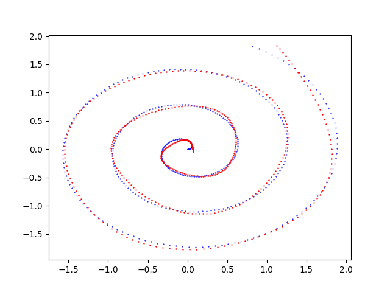

Studi, esperimenti ed esempi di modelli di apprendimento automatico profondo basati su reti neurali di diverse tipologie: percettroni multistrato, convoluzionali, ricorrenti, long-short-term-memory. Applicazioni delle reti neurali all'approssimazione di oggetti matematici, all'analisi di testi, immagini, suoni e video, alla ricerca di pattern ricorrenti in serie numeriche. Codice rigorosamente originale scritto in Python 3 con TensorFlow e/o PyTorch, funzionante e liberamente disponibile su GitHub.
Approssimazione di una curva parametrica su un piano con TensorFlow
Una curva parametrica con parametro $t$ appartenente a un intervallo chiuso su un sistema di riferimento cartesiano $Oxy$ si definisce con una coppia di funzioni $x(t) \colon [a,b] \to \rm I\!R$ e $y(t) \colon [a,b] \to \rm I\!R$
le quali restituiscono rispettivamente il valore della coordinata $x$ e della coordinata $y$ al variare del parametro $t$;
equivalentemente una curva parametrica sul piano è definita anche con una funzione vettoriale $f(t) \colon [a,b] \to {\rm I\!R x \rm I\!R}$ così definita: $$f(t) = \begin{bmatrix} x(t) \\ y(t) \\ \end{bmatrix}$$
ove le due componenti dei vettori dell'immagine della funzione rappresentano rispettivamente le coordinate $x$ e $y$ della curva sul piano cartesiano.
L'approssimazione di una tale curva, se continua e limitata, con una rete neurale è un problema classico di machine learning e non richiede reti neurali con architeture sofisticate:
è sufficiente un MLP (un percettrone multistrato, dall'inglese Multi-Layer Perceptron) per ottenere risultati con accuratezza prossima al 100%.
Si osservi intanto che le due definizioni di curva parametrica, seppur matematicamente equivalenti, suggeriscono due architetture di reti neurali differenti: la prima definizione conduce a una coppia di MLP indipendenti, uno per approssimare $x(t)$ e l'altro per approssimare $y(t)$
per poi combinare i risultati in uscita dalle due reti e ottenere le coppie $(x,y)$ che approssimano la curva sul piano;
la seconda definizione suggerisce invece un MLP ove il layer di input contiene un solo neurone in quando la dimensione del dominio è 1 (l'intervallo $[a,b]$)
mentre il layer di output contiente 2 neuroni in quanto la dimensione del codominio è 2.
Come già osservato nel post Approssimazione di una funzione di una variabile con TensorFlow, su Internet si trovano numerosi esempi di MLP che approssimano curve;
tuttavia spesso tali esempi combinano in un unico script Python la generazione dei dataset, il training, la predizione e la visualizzazione della curva approssimata;
inoltre l'architettura è hardcoded o poco parametrizzabile da linea di comando e infine le funzioni di attivazione, l'algoritmo di ottimizzazione usato e la funzione di loss sono molto spesso decisi dall'autore
senza una spiegazione che descriva le motivazioni della loro scelta.
La scarsa parametrizzazione, il ricorso a scelte implementate hardcoded e l'unificazione di varie funzionalità in un unico script rendono poco agevole la sperimentazione
e costringono lo sperimentatore a procedere per modifiche di codice al fine di realizzare e testare personalizzazioni degli MLP coinvolti e/o delle procedure di addestramento.
Scopo di questo post e del relativo codice, disponibile su GitHub, è di consentire allo sperimentatore di implementare e testare diverse combinazioni di architettura MLP, funzioni di attivazione, algoritmo di addestramento e funzione di loss senza scrivere codice ma agendo solamente sulla linea di comando di quattro script Python (più due varianti) che implementano separatamente le seguenti funzionalità:
- Creazione dei dataset: generazione di un file csv a partire da una coppia di funzioni $x(t) \colon [a,b] \to \rm I\!R$ e $y(t) \colon [a,b] \to \rm I\!R$ passate come argomento (quindi non hardcoded). Questa fase è opzionale in quanto i dataset potrebbero pre-esistere (come avviene nel mondo reale ad esempio estraendo curve da dati presenti su database o file Excel, dall'output di strumenti di misura, dai data-logger collegati a sensori elettronici, ecc) e quindi non necessariamente essere generati in modo sintetico.
-
Definizione dell'architettura del MLP + Addestramento: configurazione dell'architettura degli strati nascosti del MLP con le relative funzioni di attivazione in uscita ed esecuzione della procedura di addestramento sul dataset di training consentendo di specificare la scelta dell'algoritmo di ottimizzazione, della funzione di loss
e di altri parametri di addestramento.
- Predizione: applicazione del modello precedentemente addestrato a un dataset di input (che dovrebbe contenere dati mai visti dal modello in fase di addestramento) e generazione di un file csv di uscita con la predizione.
- Visualizzazione del risultato: generazione di un grafico che mostra la curva del dataset di training e quella della predizione e consente la comparazione visuale delle due curve. Questa fase è opzionale in quanto la predizione è salvata al passo precedente in un file csv ed è quindi già utilizzabile come tale.
Lo stesso identico meccanismo è stato realizzato usando la tecnologia PyTorch; si veda il post Approssimazione di una curva parametrica su un piano con PyTorch pubblicato sempre su questo sito web.
Creazione dei dataset
Scopo del programma Python pmc2t_gen.py
è di generare i dataset (di training e/o di test) da utilizzare nelle fasi successive;
prende in linea di comando le due funzioni componenti da approssimare (in sintassi lambda body), l'intervallo del parametro indipendente $t$ (inizio, fine e passo di discretizzazione)
e genera il dataset in un file nel formato csv applicando le due funzione all'intervallo del parametro $t$ passato.
Il file csv in uscita ha infatti tre colonne (senza header): la prima colonna contiene i valori, ordinati in modo crescente, del parametro indipendente $t$ nell'intervallo desiderato con il passo di discretizzazione specificato;
la seconda colonna e terza colonna contengono rispettivamente i valori delle componenti $x$ e $y$, ovverosia i valori delle funzioni $x(t)$ e $y(t)$ corrispondenti al valore di $t$ della prima colonna.
Per ottenere l'usage del programma è sufficiente eseguire il seguente comando:
$ python pmc2t_gen.py --helpusage: pmc2t_gen.py [-h]
-h, --help show this help message and exit
--dsout DS_OUTPUT_FILENAME dataset output file (csv format)
--xt FUNCX_T_BODY x=x(t) body (lamba format)
--yt FUNCY_T_BODY y=y(t) body (lamba format)
--rbegin RANGE_BEGIN begin range (default:-5.0)
--rend RANGE_END end range (default:+5.0)
--rstep RANGE_STEP step range (default: 0.01)Un esempio di uso del programma pmc2t_gen.py
Si supponga di voler approssimare la spirale di Archimede nell'intervallo $[0.0,20.0]$ descritta dalla seguente funzione $$f(t) = \begin{bmatrix} x(t)=\frac{1}{10} t \cos t \\ y(t)=\frac{1}{10} t \sin t \\ \end{bmatrix}$$ Tenendo presente che np è l'alias della libreria NumPy, le due espressioni componenti si traducono in sintassi lambda body Python così:
0.1 * t * np.cos(t)
0.1 * t * np.sin(t)$ python pmc2t_gen.py \
--dsout mytrain.csv \
--xt "0.1 * t * np.cos(t)" \
--yt "0.1 * t * np.sin(t)" \
--rbegin 0.0 \
--rend 20.0 \
--rstep 0.01$ python pmc2t_gen.py \
--dsout mytest.csv \
--xt "0.1 * t * np.cos(t)" \
--yt "0.1 * t * np.sin(t)" \
--rbegin 0.0 \
--rend 20.0 \
--rstep 0.0475Definizione dell'architettura del MLP + Addestramento
Questa funzionalità ha due implementazioni differenti secondo le due definizioni matematiche di curva parametrica: l'implementazione ufficiale è quella che approssima con un solo MLP la curva definita come funzione vettoriale
mentre la variante Twin approssima le funzioni componenti separatamente con due MLP gemelli.
La versione ufficiale è realizzata dal programma Python pmc2t_fit.py
che, in accordo con i parametri passati in linea di comando, crea dinamicamente un MLP ed effettua il suo addestramento al fine di approssimare la funzione vettoriale che definisce la curva sul piano.
La variante Twin è realizzata dal programma Python pmc2t_fit_twin.py
che, in accordo con i parametri passati in linea di comando, crea dinamicamente una coppia di MLP gemelli ed effettua l'addestramento di ciascuno di essi al fine di approssimare separatemente le singole funzioni componenti che definiscono la curva sul piano.
Per ottenere l'usage della versione ufficiale del programma è sufficiente eseguire il seguente comando:
$ python pmc2t_fit.py --helpusage: pmc2t_fit.py [-h]
--trainds TRAIN_DATASET_FILENAME
--modelout MODEL_PATH
[--epochs EPOCHS]
[--batch_size BATCH_SIZE]
[--hlayers HIDDEN_LAYERS_LAYOUT [HIDDEN_LAYERS_LAYOUT ...]]
[--hactivations ACTIVATION_FUNCTIONS [ACTIVATION_FUNCTIONS ...]]
[--optimizer OPTIMIZER]
[--loss LOSS]$ python pmc2t_fit_twin.py --helpSi rimanda alla lettura del file README.md per il dettaglio esaustivo della semantica dei parametri supportati in linea di comando di entrambi i programmi.
Un esempio di uso del programma pmc2t_fit.py
Si supponga di avere a disposizione un dataset di training (ad esempio generato tramite pmc2t_gen.py come mostrato nel paragrafo precedente)
e si voglia che il MLP abbia tre layer nascosti rispettivamente con 200, 300 e 200 neuroni e che si voglia usare la funzione di attivazione sigmoid in uscita da tutti e tre i layer;
inoltre si vogliano eseguire 500 epoche di training con un batch size di 200 elementi usando l'algoritmo di ottimizzazione Adamax con un learning rate di 0.02
e la MeanSquaredError quale funzione di loss. Per mettere in azione tutto questo si esegua il seguente comando:
$ python pmc2t_fit.py \
--trainds mytrain.csv \
--modelout mymodel \
--hlayers 200 300 200 \
--hactivation sigmoid sigmoid sigmoid \
--epochs 500 \
--batch_size 200 \
--optimizer 'Adamax(learning_rate=0.02)' \
--loss 'MeanSquaredError()'mymodel conterrà il modello del MLP addestrato sul dataset mytrain.csv secondo i parametri passati in linea di comando.
Predizione
Come per l'addestramento anche questa funzionalità ha due implementazioni differenti secondo le due definizioni matematiche di curva parametrica: l'implementazione ufficiale è quella che effettua la predizione usando un solo MLP pre-addestrato che approssima la curva definita come funzione vettoriale
mentre la variante Twin effettua separatamente la predizione usando due MLP pre-addestrati gemelli che approssimano separatamente le due singole funzioni componenti.
Scopo della versione ufficiale è realizzata dal programma Python pmc2t_predict.py
è quello di applicare il modello di MLP generato tramite pmc2t_fit.py a un dataset in input (ad esempio il dataset di test generato tramite pmc2t_gen.py come mostrato in un paragrafo precedente);
l'esecuzione del programma produce in uscita un file csv con tre colonne (senza header): la prima colonna contiene i valori del parametro indipendente $t$ presi dal dataset in input
mentre la seconda e la terza colonna contengono i valori predetti delle due componenti, ovverosia i valori della predizione che approssimano la curva parametrica $f(t)$ corrispondenti al valore di $t$ della prima colonna.
Scopo della variante Twin è realizzata dal programma Python pmc2t_predict_twin.py
è quello di applicare la coppia modelli di MLP generati tramite pmc2t_fit_twin.py a un dataset in input (ad esempio il dataset di test generato tramite pmc2t_gen.py come mostrato in un paragrafo precedente);
l'esecuzione del programma produce in uscita un file strutturalmente identico a quello in uscita dalla versione ufficiale; è diverso il modo di calcolare i valori della seconda e terza colonna in quanto questi sono rispettivamente i valori delle predizioni dai due singoli MLP che approssimano separatamente le due funzioni componenti $x(t)$ e $y(t)$.
Per ottenere l'usage della versione ufficiale del programma è sufficiente eseguire il seguente comando:
$ python pmc2t_predict.py --helpusage: pmc2t_predict.py [-h]
--model MODEL_PATH
--ds DATASET_FILENAME
--predictionout PREDICTION_DATA_FILENAME$ python pmc2t_predict_twin.py --helpSi rimanda alla lettura del file README.md per il dettaglio esaustivo della semantica dei parametri supportati in linea di comando di entrambi i programmi.
Un esempio di uso del programma pmc2t_predict.py
Si supponga di avere a disposizione il dataset di test mytest.csv (ad esempio generato tramite pmc2t_gen.py come mostrato in un paragrafo precedente)
e il modello di MLP addestrato nella cartella mymodel (generato tramite pmc2t_fit.py come mostrato nell'esempio del paragrafo precedente); si esegua quindi il seguente comando:
$ python pmc2t_predict.py \
--model mymodel \
--ds mytest.csv \
--predictionout myprediction.csv
myprediction.csv conterrà l'approssimazione della curva parametrica iniziale.
Visualizzazione del risultato
Scopo del programma Python pmc2t_plot.py
è quello di visualizzare la curva della predizione sovrapposta alla curva del dataset iniziale (che sia quello di test o di training) e questo consente la comparazione visuale delle due curve.
Per ottenere l'usage del programma è sufficiente eseguire il seguente comando:
$ python pmc2t_plot.py --helpusage: pmc2t_plot.py [-h]
--ds DATASET_FILENAME
--prediction PREDICTION_DATA_FILENAME
[--savefig SAVE_FIGURE_FILENAME]Un esempio di uso del programma pmc2t_plot.py
Avendo a disposizione il dataset di test mytest.csv (ad esempio generato tramite pmc2t_gen.py come mostrato in un paragrafo precedente)
e il file csv della predizione (generato tramite pmc2t_predict.py come mostrato nel precedente paragrafo), per generare i due grafici si esegua il seguente comando:
$ python pmc2t_plot.py \
--ds mytest.csv \
--prediction myprediction.csvNota: Data la natura stocastica della fase di addestramento, i singoli specifici risultati possono variare. Si consideri di eseguire la fase di addestramento più volte.

Grafico generato dal programma
pmc2t_plot.py che mostra l'approssimazione effettuata dal MLP della spirale di Archimede $f(t) = \begin{bmatrix} x(t)=\frac{1}{10} t \cos t \\ y(t)=\frac{1}{10} t \sin t \\ \end{bmatrix}$Esempi di uso in cascata dei quattro programmi
Nella cartella parametric-curve-on-plane-fitting/examples
ci sono cinque script shell che mostrano l'uso dei quattro programmi in cascata, con addestramento e predizione nella versione ufficiale, in varie combinazioni
di parametri (architettura del MLP, funzioni di attivazione, algoritmo, funzione di loss, parametri di prodedura di training).
Inoltre ci sono altri cinque script shell che ripropongono gli stessi esempi ma con addestramento e predizione nella variante Twin.
Per mandare in esecuzione i cinque esempi nella versione ufficiale eseguire i seguenti comandi:
$ cd parametric-curve-on-plane-fitting/examples
$ sh example1.sh
$ sh example2.sh
$ sh example3.sh
$ sh example4.sh
$ sh example5.sh
$ cd parametric-curve-on-plane-fitting/examples
$ sh example1_twin.sh
$ sh example2_twin.sh
$ sh example3_twin.sh
$ sh example4_twin.sh
$ sh example5_twin.sh
Download del codice completo
Il codice completo è disponibile su GitHub.
Questo materiale è distribuito su licenza MIT; sentiti libero di usare, condividere, "forkare" e adattare tale materiale come credi.
Sentiti anche libero di pubblicare pull-request e bug-report su questo repository di GitHub oppure di contattarmi sui miei canali social disponibili nell'angolo in alto a destra di questa pagina.